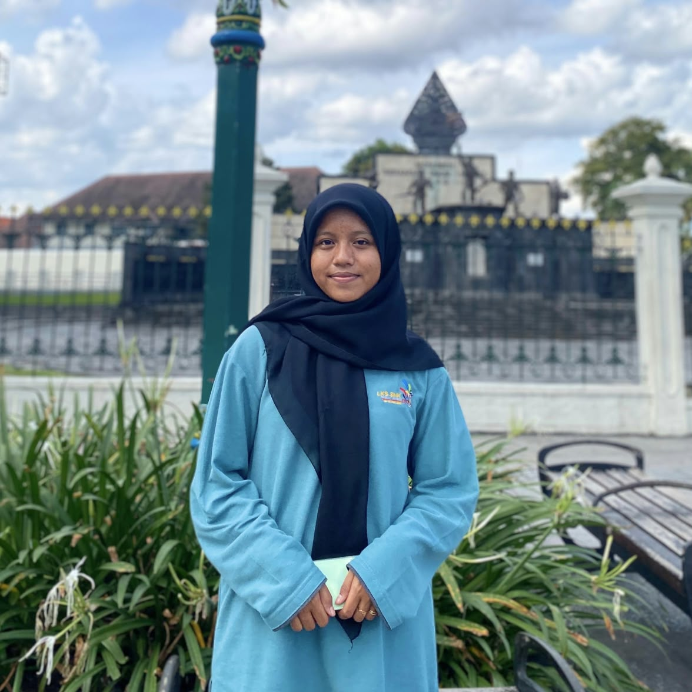
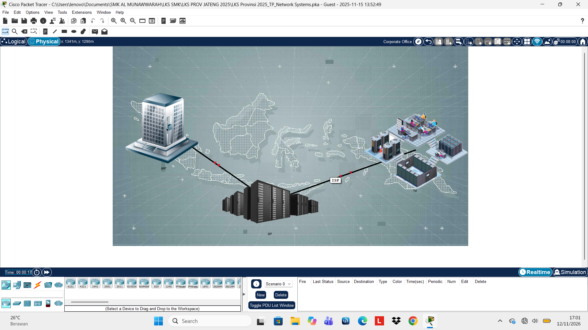
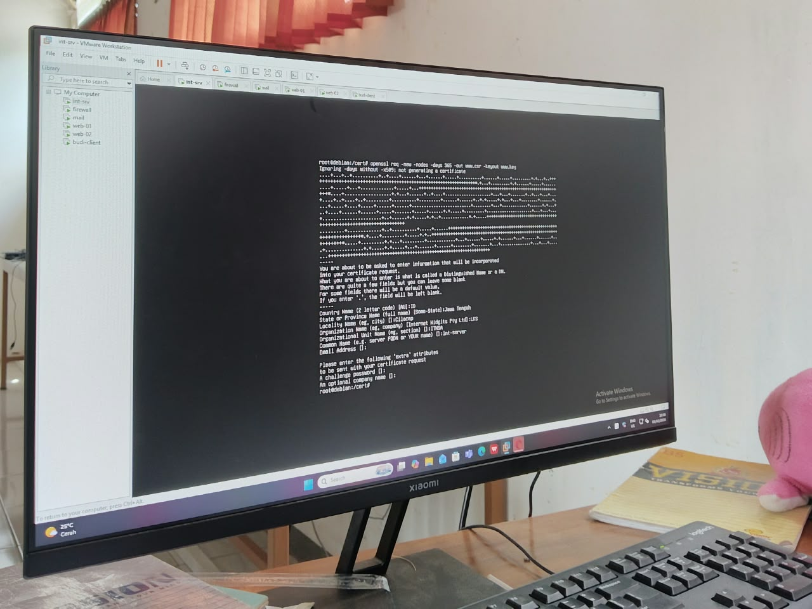
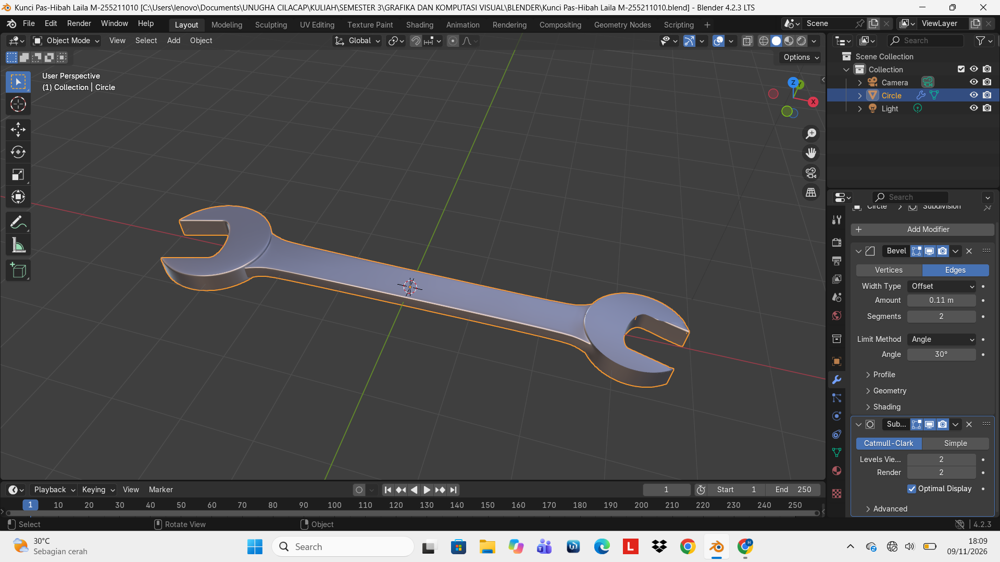
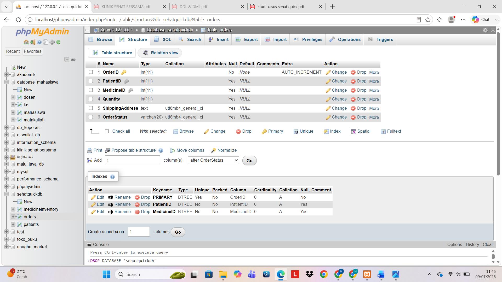

Computer Networking & Cable Installation
Memahami dasar jaringan komputer, konfigurasi jaringan, IP Address, troubleshooting, serta praktik pembuatan kabel UTP dan instalasi Fiber Optic (FO).

HELLO, WELCOME TO MY WEBSITE
Saya adalah mahasiswa Informatika yang memiliki ketertarikan pada dunia teknologi informasi. Senang mempelajari hal baru, mengeksplorasi berbagai bidang teknologi, serta mengembangkan kemampuan melalui pengalaman dan proses belajar. Bagi saya, setiap pengalaman adalah kesempatan untuk bertumbuh, mengenal potensi diri, dan menciptakan langkah baru menuju masa depan.
PROFIL SINGKAT
Sebuah perjalanan yang masih terus ditulis, dengan pengalaman dan pembelajaran di setiap langkahnya.
Perkenalkan, saya Hibah Laila Muzayanah, mahasiswa Program Studi Informatika di Universitas Nahdlatul Ulama Al Ghazali Cilacap dan lulusan SMK Al Munawwarah Cilacap.
Saya memiliki ketertarikan pada dunia teknologi informasi, khususnya jaringan komputer, sistem operasi Linux, administrasi sistem, dan Cyber Security. Selama menempuh pendidikan, saya mulai mengenal berbagai bidang tersebut dan semakin tertarik untuk mempelajarinya lebih dalam, terutama mengenai bagaimana sistem dan jaringan komputer dapat dikelola serta dilindungi dari berbagai ancaman keamanan.
Saya senang mencoba hal-hal baru, menambah pengalaman, dan mengembangkan kemampuan melalui proses belajar. Bagi saya, setiap pengalaman memiliki pelajaran tersendiri yang dapat membantu saya untuk terus berkembang menjadi pribadi yang lebih mandiri, disiplin, dan bertanggung jawab. Saya percaya bahwa setiap proses memiliki waktunya sendiri, dan setiap langkah kecil yang dilakukan dengan konsisten akan membawa perubahan berarti.
KEAHLIAN SAYA
Beberapa kemampuan yang terus saya kembangkan melalui pengalaman dan proses belajar.
Memahami dasar jaringan komputer, konfigurasi jaringan, IP Address, troubleshooting, serta praktik pembuatan kabel UTP dan instalasi Fiber Optic (FO).
Memahami penggunaan sistem operasi Linux, perintah dasar terminal, serta pengelolaan sistem melalui praktik.
Memiliki pengalaman dalam praktik administrasi sistem, konfigurasi layanan, dan pengenalan pengelolaan server.
Mengenal dasar-dasar pemrograman dan sedang mengembangkan kemampuan dalam membuat program serta website.
Memiliki pengetahuan dasar dalam desain grafis dan pembuatan objek 3D menggunakan aplikasi desain.
PERJALANAN BELAJAR
A journey of learning, growing, and discovering new things.
Memulai perjalanan pendidikan, membangun pengetahuan dasar, dan mengenal lingkungan belajar.
Memperoleh berbagai pengalaman baru, memperluas wawasan, dan mulai mengenal banyak hal.
Menjadi awal perjalanan saya mengenal dunia teknologi informasi. Di sini saya mulai mempelajari jaringan komputer, Linux, dan administrasi sistem, sekaligus mendapatkan pengalaman mengikuti LKS IT Network System Administration tingkat Provinsi Jawa Tengah.
Melanjutkan perjalanan di bidang Informatika dengan memperdalam pengetahuan, mengembangkan kemampuan, dan mengeksplorasi berbagai bidang teknologi.
PERJALANAN & PENCAPAIAN
Setiap pengalaman memiliki cerita, dan setiap pencapaian menjadi bagian dari proses untuk terus berkembang.
01. ORGANIZATION EXPERIENCE
Terlibat dalam kegiatan organisasi dan kepanitiaan yang memberikan pengalaman dalam bekerja sama, berkomunikasi, dan menjalankan tanggung jawab.
02. COMPETITION EXPERIENCE
Mendapatkan pengalaman mengikuti berbagai kegiatan kompetisi untuk mengasah kemampuan, meningkatkan keterampilan, dan menambah wawasan. Salah satunya adalah Lomba Kompetensi Siswa (LKS) bidang IT Network System Administration tingkat Provinsi Jawa Tengah.
03. PERSONAL DEVELOPMENT
Terus mengembangkan kepercayaan diri, kemampuan komunikasi, dan keberanian mencoba hal baru melalui berbagai pengalaman.
MY RECENT WORK
Beberapa dokumentasi kegiatan, praktik, dan karya yang menjadi bagian dari perjalanan belajar saya.

01. NETWORKING PROJECT
Praktik pembuatan kabel UTP, pengenalan Fiber Optic, konfigurasi jaringan, dan simulasi jaringan komputer. Termasuk pengalaman mengikuti LKS IT Network System Administration tingkat Provinsi Jawa Tengah.

02. LINUX & SYSTEM ADMINISTRATION
Dokumentasi praktik Linux, penggunaan terminal, konfigurasi sistem, dan pengelolaan server.

04. GRAPHIC DESIGN & 3D MODELING
Hasil desain grafis menggunakan CorelDRAW serta karya objek 3D menggunakan Blender.

05. PROGRAMMING & DEVELOPMENT
Proyek pemrograman, tugas perkuliahan, pembuatan website, dan pengembangan aplikasi.
GET IN TOUCH
Saya terbuka untuk berdiskusi, berbagi pengalaman, menerima segala masukan, dan menjalin koneksi baru. Jangan ragu untuk menghubungi saya melalui kontak berikut.